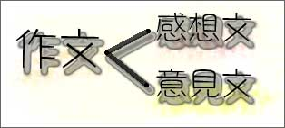
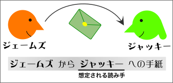
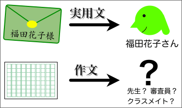

作文と実用文の違い
実用文とは何かを、作文と比較しながら考えてみよう。
作文と実用文の定義
作文と実用文は、それぞれ以下のように定義できる。
- 作文
- 経験や体験に基づいて自分の意見や考えを書いた文章
- 実用文
- 事実や意見を特定の相手に伝えるために書かれた文章
作文とは何か
作文は、大きく感想文と意見文に分けられる。

感想文は、自分の経験・体験に対する感想や経験・体験を通じて自分が考えたことを、わかりやすくまとめて書いたもののことである。
意見文は、自分の経験・体験をもとに、自分の主張や意見を論理的に書いたもののことである。
いずれの場合も、作文は、経験や体験に基づいて自分の意見や考えを書いた文章であるということができる。つまり、作文は、自分の考えを読み手に伝える方法のひとつである。
実用文とは何か
事実や意見・提案を特定の相手に伝えるために書かれる文章を実用文という。
たとえば、手紙は特定の相手に差し出すものであるから、手紙の文章は実用文であるといえる。同様に、友達に出す電子メールも実用文である。

また、会社の上司に提出する企画書や報告書、顧客に出す案内状などのビジネス文書もすべて実用文である。
実用文と作文の違い
事実や意見を伝えるために、わかりやすくまとめて書くという点では、実用文も作文も同じである。

しかし、特定の読み手が想定されているかどうかという点で、実用文と作文とには大きな違いがある。実用文が特定の相手を想定して書かれるものであるのに対して、作文はあらかじめ特定の相手に向けて書かれるものではない。
- 実用文
- 誰が読むのか初めから決まっている（わかる）
- 作文
- 誰が読むのかは決まっていない（わからない）
また、実用文では、内容（売り上げのデータ、製品のスペック、待ち合わせの時間や場所など）を読み手に正確に伝えることが重視され、書き手の経験や体験は特に重要ではない。この点でも、経験や体験を基本とする作文とは異なっている。